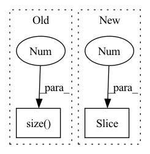

Pattern ID :1152
Before Change
g_t = torch.softmax(g_t, dim=-1) / sig_t + self.eps
// each B x K x T_in
g_t = g_t.unsqueeze(2).expand(g_t.size(0 ) ,
g_t.size(1),
inputs.size(1))
sig_t = sig_t.unsqueeze(2).expand_as(g_t)After Change
// discritize attention weights
alpha_t = self.COEF * torch.sum(phi_t, 1)
alpha_t = alpha_t[:, 1 :] - alpha_t[:, :-1]
// apply masking
if mask is not None:In pattern: SUPERPATTERN
Frequency: 3
Non-data size: 2
Instances Fragment ID: 4105070
Project Name: coqui-ai/tts
Commit Name: 5e148038be5971f2c7c811d46a1d7b28c759ecda
Time: 2020-01-09
Author: root@sp-mlc3-5423-0.mlc
File Name: layers/common_layers.py
M Class Name: GravesAttention
N Class Name: GravesAttention
M Method Name: forward(5)
N Method Name: forward(5)
M Parent Class: nn.Module
N Parent Class: nn.Module
M File Name: layers/common_layers.py
N File Name: layers/common_layers.py
M Start Line: 162
M End Line: 176
N Start Line: 162
N End Line: 174
Before Change
def forward(self, x):
out = self.backbone(x)
if out.size(-1 ) != 1:
out = F.relu(out, inplace=True).mean([2, 3])
else:
out = out.squeeze()After Change
def forward(self, *x):
x = list(x)
input_shape = x[0].shape[-2: ]
out = self.bacbone(x[0])
x[0] = out
out = self.classifer(*x) Fragment ID: 4105071
Project Name: sungbinlim/neuboots
Commit Name: ded678ac1ebc9480abda4b2edf1614501d3242db
Time: 2021-02-08
Author: phelahab@gmail.com
File Name: models/nbsnet.py
M Class Name: GeneralConvNet
N Class Name: SegNet
M Method Name: forward(1)
N Method Name: forward(2)
M Parent Class: nn.Module
N Parent Class: nn.Module
M File Name: models/nbsnet.py
N File Name: models/nbsnet.py
M Start Line: 53
M End Line: 59
N Start Line: 56
N End Line: 68
Before Change
// Return copy if upsampling factor is one.
if self.upsampling_filter.size(0 ) == 1:
return x
d = x.dim()After Change
(x.size(-1) - 1) * self.scale_factor + 1,
mode="linear",
align_corners=True,
)[..., :-1 ]
y = x.transpose(1, 2).reshape(B, -1, D)
if d == 1: Fragment ID: 4105078
Project Name: sp-nitech/diffsptk
Commit Name: e6c55923477c74a650f2ccefe1a7287628539779
Time: 2023-05-23
Author: chin-yun.yu@qmul.ac.uk
File Name: diffsptk/core/linear_intpl.py
M Class Name: LinearInterpolation
N Class Name: LinearInterpolation
M Method Name: forward(2)
N Method Name: forward(2)
M Parent Class: nn.Module
N Parent Class: nn.Module
M File Name: diffsptk/core/linear_intpl.py
N File Name: diffsptk/core/linear_intpl.py
M Start Line: 78
M End Line: 93
N Start Line: 70
N End Line: 89